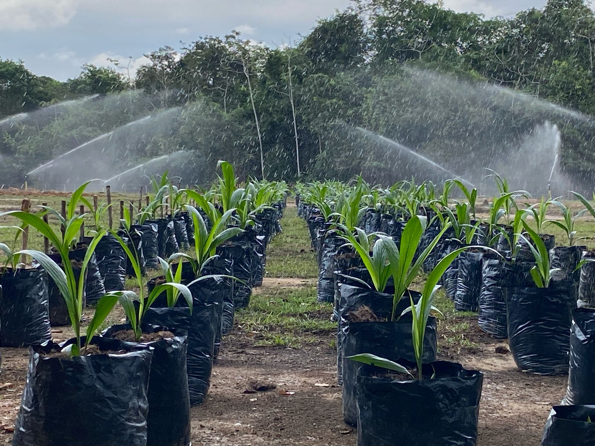
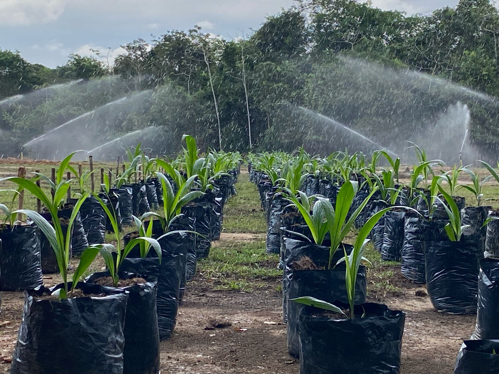

Informacion
Nos dedicamos a la producción y comercializacion de palma de aceite, con mas de 20 años de experiencia en la misma, haciendo labores sostenibles amigables al ambiente. Nos especializamos en la cría y manejo de ganado bufalino, conocido por ser mejor que el ganado bovino en cuanto a calidad de carne, leche y mejor capacidad de trabajo en diversas labores agrícolas. Nuestro ganado es criado en ambientes controlados y naturales, garantizando productos saludables y de excelencia. También criamos especies menores como cerdos y pollos, enfocándonos en prácticas sostenibles y éticas, asegurando el bienestar animal y la satisfacción del consumidor. promoviendo el desarrollo agropecuario sostenible.
Estamos ubicados en Tibu, Norte de Santander
 
